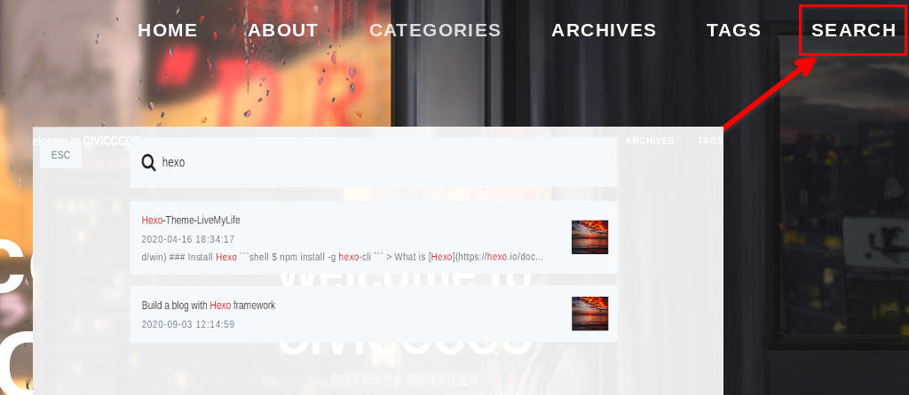

欢迎各位小伙伴的到来，这里是 CIVICCCCC 的博客，下面是近期更新的内容。
查看更新的博文请点击右上角SEARCH搜索相应博文的英文标题前几个字母即可。
QQ Group:
闲聊群：583256870
Jitsi Meet中文交流群（非专业）：246483851
这里是快捷导航：
更新日志 - Update Log
- 2025.02.15:服务器更新，从Debian 10迁移至Debian 12
- 2024.10.15:Jitsi Meet中文交流群（非专业）：246483851；Jitsi-Meet文档粗略翻译完成
- 2024.02.15:Textsend APP重新改版大更新！上线uTools端插件，Android端迁移Kotlin，UI新设计。PC端发射器、接收器重构。
- 2023.12.12:
Why-Linux更新了办公相关（国产系统） - 2023.11.12:更新了
Fluxbox-Notes - 2023.11.01:
Why-Linux更新了DoH、HP Laser NS1020打印机、GRUB菜单部份加密等内容 - 2023.10.21:
Toolkit更新了PPT模板等办公资源网站 - 2023.07.16:
Toolkit更新了视频下载网站和隐私检测模块 - 2023.03.30:
Why-Linux更新了水星（Mercury UD6）网卡驱动安装 - 2023.03.08:
Moment记录了进口二手车川崎ER6F异地过户流程 - 2023.02.10:
Debian-Server更新了linx-server和tiny-file-manager的部署指南 - 2023.02.05: 建立了文件共享服务器：中国大陆 | 海外地区 | 只读资源（只读账户(密码同)：
guest）；直播文件下载(只读) - 2022.12.23:Libera IRC频道
#wxx已经与Telegram群组互通(Web)；如需IRC离线消息可使用博主的ZNC服务器(不是很好用)【服务器端口、用户名、密码】分别是：【】；Debian-Server更新了jitsi-meet、matterbridge和znc的搭建、配置教程 - 2022.11.30:【沉痛悼念】江泽民逝世，享年96岁。江泽民同志是我国各族人民公认的享有崇高威望的卓越领导人，伟大的马克思主义者，伟大的无产阶级革命家、政治家、军事家、外交家。江泽民同志的逝世，对我国各族人民是不可估量的损失。中华民族的伟大复兴事业，凝结了包括江泽民同志在内的一代又一代共产党人的心血和奋斗。党中央号召，全党全军全国各族人民化悲痛为力量，继承江泽民同志的遗志，以实际行动表达我们的悼念。前进道路上，全国各族人民要在以习近平同志为核心的党中央坚强领导下，高举中国特色社会主义伟大旗帜，坚定信心、同心同德，埋头苦干、奋勇前进，为全面建设社会主义现代化国家、全面推进中华民族伟大复兴而团结奋斗。江泽民同志永垂不朽！；
- 2022.11.16:电台摸鱼群群聊直播(地址见往期RSS)提升画质到720p，建议使用新加坡、俄罗斯节点收听。
- 2022.11.14:修复了Jitsi Meet of CIVICCCCC.LTD视频通话连接失败的问题；欢迎各位加入
电台摸鱼群一起摸鱼，群内禁止黄赌毒禁广告 - 2022.11.07:修复了主站代码526无法访问的问题
- 2022.10.15:哔哩哔哩更新了漳州市东山县照片视频
- 2022.09.26:祝学妹新婚快乐~
- 2022.09.20:哔哩哔哩直播网页端卡顿的问题已解决，欢迎收听(地址：映客直播 | 哔哩哔哩)
- 2022.09.13:哔哩哔哩更新了春风250NK和新大洲本田CBF125T的视频；映客直播平台365天24小时不间断音乐站搭建基本完成，欢迎各位前来听歌
- 2022.08.22:哔哩哔哩电磁力升级Lv.3，新增视频合集，欢迎订阅
- 2022.08.09:
PEncoder更新了v2.2版本(修复了DB文件跨平台中文编码错误问题) | Release Page - 2022.07.13:
Why-Linux更新了Virtual Box 6.1.34在Debian 11上虚拟机频繁重启的解决办法 - 2022.07.10:
Why-Linux更新了新装的Debian 11 Inte i5-10400(UHD630)开机黑屏解决方法 - 2022.06.21:更新了机翻的日本摩友的文章125cc 的自行车 HONDA CBF125T 对我来说简直就是神车！ 我将介绍两种cospa最强的轻便摩托车！ | 昆布郎
- 2022.06.13:
Moment更新了开椰子的方法；安卓天气报客户端更新了0.0.4版本；更新了哔哩哔哩视频列表 - 2022.05.25:天气报安卓客户端发布0.0.3版本(添加切换全屏)；哔哩哔哩更新了视频一些快乐的瞬间-2022年5月17日
- 2022.05.08:更新了哔哩哔哩视频列表；协助打包了天气报安卓客户端；主站排版更新；部署了音乐电台(列表循环，不出意外的话，应该是24小时+365天无间断直播)，地址：映客直播 | 哔哩哔哩 欢迎莅临。
- 2022.05.01:
Debian-Server更新了使用FFmpeg推流 - 2022.04.17:
Install-Audiophile-Linux-v5-with-UEFI-GPT更新了Audiophile Linux升级系统后无法开机的解决方案 - 2022.03.29:
RSS更新了排版，新增链接识别(更新日志RSS) - 2020.03.28:Links页面更新了每日诗词；计划
RSS新增链接识别(TODO)；更新了主题，新增随机彩带特效(From Commit) - 2022.03.27:为了优化网页加载速度，单独分离出
Windows-Notes、Linux-Applications、Web-Notes、Python-Notes、Java-Notes、Shell-Notes和C-Notes；博客主页连通主站；更新RSS生成器；修复了Why-Linux失效的链接；修改了主题首页封面文字为不可选择 - 2022.03.25:主站
DNS服务器地址修改为Cloudflare所属；由于启用了Cloudflare CDN，大陆地区访问部分网页可能出现显示异常(JavaScript文件无法正常加载) - 2022.03.19:主站更新了友情链接页面，欢迎交换友链(个人博客优先，广告类不接)，点我访问
- 2022.03.16:
Why-Linux更新了Linux下大文件分块的知识 - 2022.03.15:
Why-Linux更新了部分来源于Manjaro.org的文字 - 2022.03.11:修正了
Why-Linux文章中Debian网络配置的部分错误 - 2022.03.04:
Toolkit更新了淘宝直播回放查看地址、正则表达测试；Why-Linux更新了sed使用正则表达式；Moment更新了动态 - 2022.02.22:
Why-Linux更新了Python处理GMT时间的笔记 - 2022.02.08:
Bilibili-navigation更新了 正月初五镇海角小视频 - 2022.01.28:修改了RSS订阅源。默认订阅源为更新日志(当前内容)；如需订阅文章内容，请订阅 这个 -> https://civiccccc.ltd/rmshadows/atom.xml
- 2022.01.26:新增了 RSS 订阅源
- 2022.01.25:更新了 Like And Share 页面
- 2022.01.22:
Why-Linux更新了Windows静默安装指南 - 2022.01.21:更新了Instagram镜像地址
- 2022.01.20:Youtube频道
- 2022.01.15:主站和博客更新了雨（城、福州、摩托）；
Why-Linux更新了Linux远程桌面开启方法 - 2022.01.08:更新了见缝插针小游戏(闯关模式 | 无敌模式)；更新了时钟；主页更新了雨 · 城 |
夜 - 2021.12.19:一些免费的网页模板预览，点我跳转
- 2021.12.16:kind of Blue 墙 已上线，留下你的小情绪；愿你被这个世界温柔以待，即使生命总以刻薄荒芜相欺:heart:
- 2021.12.13:更新了哔哩哔哩视频
- 2021.12.11:更新了
Moment动态；更新了Instagram照片(此后Moment动态更新不再本文中提及) - 2021.12.03:修复了博客主题在Gitee Page中丢失背景图片的Bug；
Why-Linux更新了Linux & Android 手机互联；国内站点已恢复运行 - 2021.12.02:
Why-Linux更新了对于Windows卡顿的非专业观点 - 2021.11.29:更新了哔哩哔哩视频导航目录
- 2021.11.26:随便更新了下
Moment动态 - 2021.11.22:优化了主站的排版；修复了博客
js、img等路径失效问题 - 2021.10.27:
Why-Linux更新了Debian 11(bullseye)GNOME桌面的一键部署脚本，含演示视频 - 2021.09.22:帮助汉化了Dayon!项目(截至今日，Pull request已经提交，但暂未通过)
- 2021.09.09:
Text-Send-a-Crossplatform-text-transmission-tool发布了Text Send新版本 - 2021.08.11:
Bilibili-navigation更新了2018年绝地求生全军出击(已停服)直播回放 - 2021.08.02:
Bilibili-navigation更新了7月见闻 - 2021.07.17:
Bilibili-navigation更新了交通迷惑行为鉴赏 - 2021.07.10:
Bilibili-navigation更新了一个人去看海 - 2021.07.01:
Moment更新了七一建党百年祝贺 - 2021.06.30:
Bilibili-navigation更新了视频 - 2021.06.23:
Bilibili-navigation更新了视频 - 2021.06.19:Gitee站点似乎已经恢复；更改了博客排版等
- 2021.06.13:
Build-a-blog-with-Hexo-framework更新了添加鼠标特效 - 2021.06.12:Gitee站点疑似被误封，小伙伴们请访问 https://civiccccc.ltd
- 2021.06.11:
Bilibili-navigation更新了骑行见闻的视频；Why Linux更新了Git仓库体积太大的处理方法 - 2021.06.06:
Bilibili-navigation更新了佛系遛弯和行车记录的视频 - 2021.05.08:
Toolkit更新了Java Sound API教程两篇 - 2021.04.23:
Articles更新了SystemRescue的安全地删除数据、刻录可启动的System Rescue DVD光盘、引导损坏的linux系统等文章 - 2021.04.22:
Articles更新了Debian.org的给新用户有关不破坏其Debian系统的建议和System Rescue.org的使用Backing Store持久化储存你的更改 - 2021.04.14:部署了Jitsi在线会议和Jami服务JAMS
- 2021.04.07:部署了ISSO评论系统；
Debian-Server更新了ISSO部署方法 - 2021.04.06:海外导航站点正式投入使用，域名：CIVICCCCC.LTD；部署了Hackchat匿名聊天应用，使用
https://civiccccc.ltd/hc/?+英文房间名创建房间 - 2021.04.04:
Debian-Server更新了Hackchat部署方法 - 2021.03.31:
Bilibili-navigation更新了佛系遛弯系列视频；Debian-Server更新了部署脚本v0.0.2；开始迁移海外站点，计划注销日本服务器 - 2021.03.30:
Debian-Server更新了DebianServerInit_v0.0.1 - 2021.03.27:海外站点初步建设完成，大家可以点击这里尝试访问
- 2021.03.24:
Toolkit收录了Yed、Draw.io等UML、HTML在线IDE工具 - 2021.03.20:更正了
Debian-Server中Firefox_SSL配置文件错误格式 - 2021.03.19:
Recent-Updates新增服务器状态页面 - 2021.03.17:
Articles更新了Jitsi部署、Openmeetings部署等文章；更改了Post模板 - 2021.03.15:评论系统由
Gitalk更换为Livere，支持QQ、微信等多种登录渠道；Build-a-blog-with-Hexo-framework更新了评论系统相关讨论 - 2021.03.14:
Why-Linux更新了Debian GNOME一键部署脚本v3.3.7，修复了部分bug - 2021.03.13:
Why-Linux更新了Debian GNOME一键部署脚本v3.3.6，更新日志请查看文件注释 - 2021.03.07:
Articles更新了system-rescue.org的将System Rescue安装在系统盘、开始使用、网络配置与应用程序的文章翻译 - 2021.03.06:
Why-Linux更新了GRUB个性化配置相关内容，涵盖加密、自定义开机音乐、主题制作、自定义启动菜单等 - 2021.03.05:
Why-Linux优化了内容编排 - 2021.03.01:
Why-Linux新增了Shell Notes栏目；Career更新了china-animal-health-inspection_v2.0 - 2021.02.25:
Toolkit其他工具中添加了yEd在线流程图编辑器 - 2021.02.22:
Why-Linux更新了Docker微信安装脚本和Debian Build v3.3.4部署脚本 - 2021.02.14:
Why-Linux更新了Windows 7安装Python后在Script下找不到pip.exe的解决办法 - 2021.02.13:
Bilibili-navigation更新了『佛系遛弯』行车记录：东园中学-省道208复线-2021年2月12日 - 2021.02.08:
Articles更新了Booting SystemRescueCd和Installing SystemRescue on the disk(翻译进度2／3)文章的翻译。 - 2021.02.07:
Recent-Update中的MD语法检索移至Markdown中。 - 2021.02.06:
Why-Linux添加了中州韵输入法(Rime)自定义词库的方法。 - 2021.02.01:
Career添加了GeneratePrintImage项目简介；Toolkit收录了国务院政府信息公开。 - 2021.01.24:
Toolkit仓库添加了微软更新中心链接。 - 2021.01.23:
Why-Linux对APT命令解析进行了排序;Moment更新了动态。 - 2021.01.21:
Toolkit添加了浏览器内核在线检测工具。 - 2021.01.18:
Career添加了Python自动生成产品证Excel表格。
博客于2020年9月上线。
服务器状态 - Server Status
我会在这里发布一些日常、使用文档或者教程。
如果你喜欢这儿，请收藏书签 : CIVICCCCC’s Blog > https://rmshadows.gitee.io/
2
3
4
5
6
7
8
9
10
如果您的设备不支持TLSv1.3，请访问国内地址：https://rmshadows.gitee.io
当前已知访问可能出错的设备：
1. Android版本 < 8.1
2. IOS Safari < 12.3.1
3. Mac(OSX) < 10.14.6-Beta
4. Firefox < 73
5. IE浏览器 = All
6. Chrome < 70
7. Java < 11.0.3欢迎仪式结束，以下是一些个人备忘录。
Welcome guys, this is CIVICCCCC’s Blog.
I’ll post some daily, usage documents or tutorials here.
If you enjoy here , Like & Share with ur friends ~
The following is my memo about dos & don’ts .
● L ◢█◣◢█◣
∠▏ i ██████
●Υ ┃ k ◥████◤
┠┘ ╱╲ e ◥██◤
┠╮ ╰┬╯ & ◥◤
─╯ │ ┙ Share !!!!!!!!!!!!!!!!!!!
站点概览 - Feature
所有帖子请见
Archives关于我请见
About搜索功能 - Search

聊天功能 - Chat
评论、分享功能 - Comment && Share
夜间模式 - Night Mode
Github && Top
备忘录 - Memo
UpdateLog格式(For RSS)必须是【日期】:【内容A】；【内容B】(日期格式：YYYY.MM.DD；英文冒号、中文分号)每一篇Post的Tag可以有多个，但Categories只能有一个。
Post图片直接插入：
top: 999置顶功能，该文章目前处于：996尽量采用双语，标题只用英文，副标题使用中文。
本地资源使用相对地址。
动态：Moment长文章采用Readme源码+导出Html到
www/Moment/文件夹中，文件名：【动态日期】+【标题】分类导航：
- Daily[日常]
- Notes[笔记]
- Tools[工具分享]
- Hows[教学]
- Release[我发布的小玩意儿]
- Administrative Professional Ability Test[行政能力测试-没有英文]
Each post may come with several tags ,but only one category will be allocated .
Insert pictures in a post :
Pin articles on top with number followed :
top:999Post articles with bilingual in Chinese & English as possible.
Use relative address for local sources.
Categories：
- Daily[…]
- Tools[Tools sharing]
- Hows[How to]
- Release[Released of mine]
- Administrative Professional Ability Test[China’s Civil Servants Examination，only in Chinese]
说明 - Notice
本站提供的所有内容仅供学习、分享与交流，内容正确性请自行判断，凡伴随本站内容带来的风险与本站无关，若须转载本站作者原创文章请务必注明出处，谢谢
当本网站以链接形式推荐其他网站内容时，本网站并不对这些网站或资源的可用性负责，且不保证从这些网站获取的任何内容、产品、服务或其他材料的真实性、合法性，对于任何因使用或信赖从此类网站或资源上获取的内容、产品、服务或其他材料而造成（或声称造成）的任何直接或间接损失，本网站均不承担任何责任。
除另有明确说明或者中国法律有强制性规定外，本网站用户原创的作品，本网站及作者共同享有版权，其他网站及传统媒体如需使用，须取得本网站的授权，未经授权严禁转载或用于其它商业用途。
- 本网站所刊载的各类形式（包括但不仅限于文字、图片、图表）的作品仅供参考使用，并不代表本网站同意其说法或描述，仅为提供更多信息，也不构成任何投资建议。对于访问者根据本网站提供的信息所做出的一切行为，除非另有明确的书面承诺文件，否则本网站不承担任何形式的责任。
- 访问者在确定使用本站时，即同意对本站提供您的部分信息为本站所用。访问者在本网站注册时提供的一些个人资料，本网站除您本人同意及第六条规定外不会将用户的任何资料以任何利益方式泄露给任何一方。
- 当政府部门、司法机关等依照法定程序要求本网站披露个人资料时，本网站将根据执法单位之要求或为公共安全之目的提供个人资料。在此情况下之任何披露，本网站均得免责。
- 本网站有部分内容来自互联网，如无意中侵犯了哪个媒体 、公司 、企业或个人等的知识产权，请联系Email：
justaaaa@163.com，本网站将在能力范围内给予删除等相关处理。 - 以上声明内容的最终解释权归
CIVICCCCC.LTD所有。
Share & Donate
如果你喜欢这儿，请分享给你身边的朋友
If you feel that what I have written is of some value to you, just share with your friends …
联系方式请见About页面。
If you like this blog or find it useful for you, you are welcome to comment on it. You are also welcome to share this blog, so that more people can participate in it. If the images used in the blog infringe your copyright, please contact the author to delete them. Thank you !